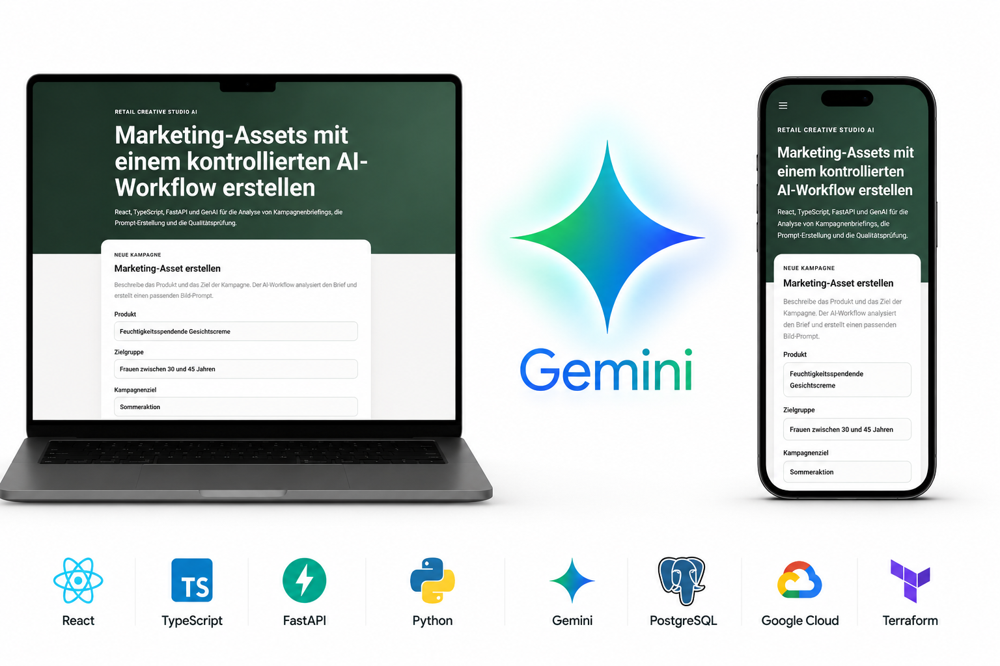
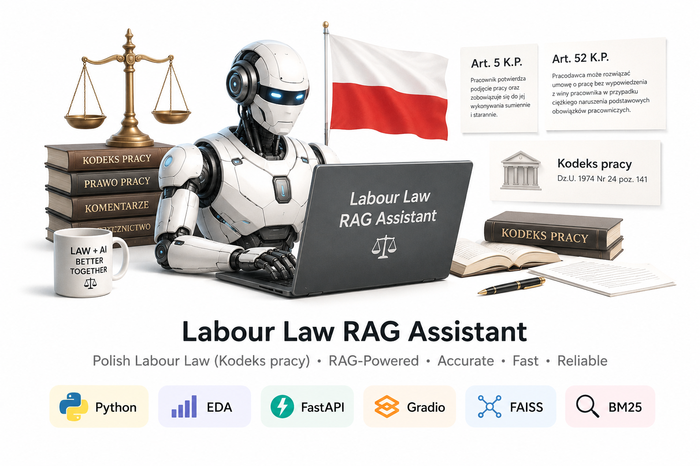

Maria Kowalska
Thank you for visiting my portfolio. Below are some of the technologies I’m familiar with and examples of my work.
Recent projects:

Retail Creative Studio
Retail Creative Studio is an AI-powered marketing platform that transforms campaign briefs into structured prompts and marketing assets. Built with React, TypeScript and FastAPI, it uses Gemini to analyze campaign requirements and generate consistent marketing content. The application is designed for cloud deployment on Google Cloud with Infrastructure as Code managed through Terraform.

I 🫶 Strawberry 🍓 !
Strawberry Detection Mobile App is a computer vision project focused on training a YOLOv8 model for strawberry detection, converting the model to TensorFlow Lite (TFLite), and deploying it in a mobile application.

Labour Law RAG assistant ⚖️
Polish Labour Law RAG Assistant is an AI-powered legal assistant built with Retrieval-Augmented Generation (RAG) techniques to help users search and understand Polish labour law regulations. The project combines FastAPI, Gradio, FAISS, and BM25 for semantic document retrieval and accurate legal question answering.

RPA examples
RPA Projects Repository contains examples of Robotic Process Automation (RPA) solutions designed to automate repetitive business tasks and improve workflow efficiency using modern automation tools and scripting techniques.